Ursache finden, auch offline
Kühlschrank kühlt nicht, Wasserpumpe still, Heizung aus? Symptom wählen, kurze Ja/Nein-Fragen beantworten und Schritt für Schritt die Ursache finden.
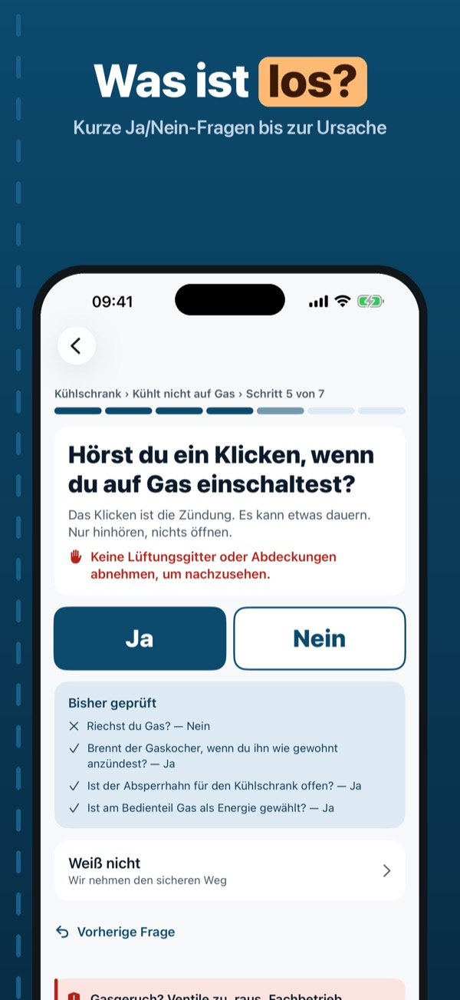
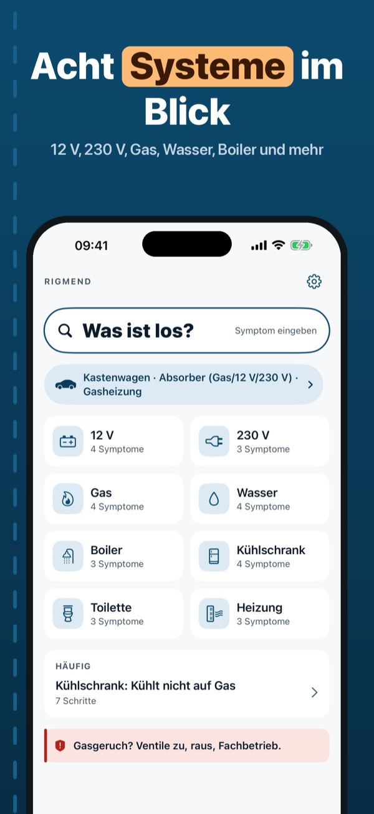
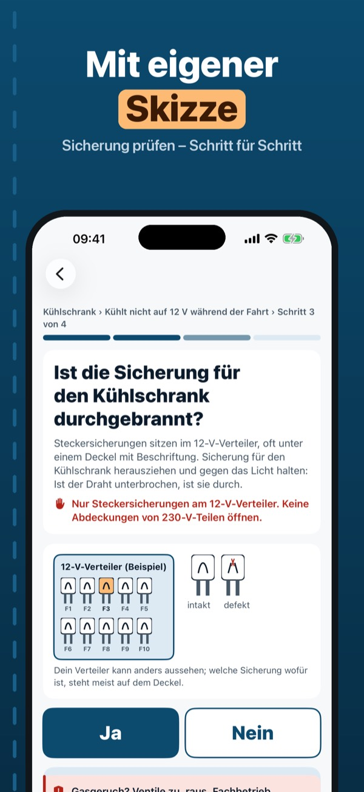
Rigmend hilft bei Störungen an Wohnmobil, Kastenwagen und Wohnwagen. Du wählst das System und das Symptom, beantwortest kurze Ja/Nein-Fragen und kommst Schritt für Schritt zur Ursache – auch ohne Netz auf dem Stellplatz. Bei Gas und 230 V endet jeder Weg mit einem klaren Hinweis auf den Fachbetrieb.
10 häufige Symptome, die Checkliste zum Einwintern und alle Sicherheitsregeln gehen ohne Kauf. Rigmend Plus ist ein Einmalkauf: alle Symptome in acht Systemen, Filter für deine Bauart, Checkliste Saisonstart, Servicenotiz als PDF, Notizen und Verlauf. Kein Abo.
Rigmend hilft bei der Fehlersuche und ersetzt keine Fachwerkstatt. Arbeiten an Gas- und 230-V-Anlagen gehören in einen Fachbetrieb. Keine Herstellerangaben, nur allgemeine Bauarten.
Terms of Use (EULA): https://www.apple.com/legal/internet-services/itunes/dev/stdeula/
Privacy: https://apps.baytech.nl/rigmend-eu/
Oorzaak vinden, ook offline
Koelkast koelt niet, waterpomp stil, verwarming uit? Kies de klacht, beantwoord korte ja/nee-vragen en vind stap voor stap de oorzaak.
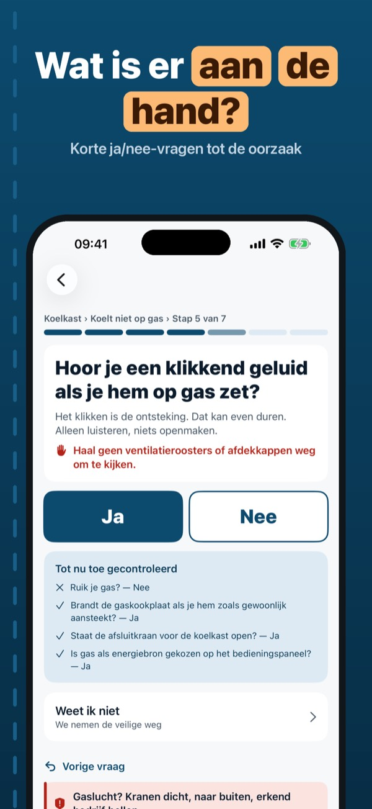
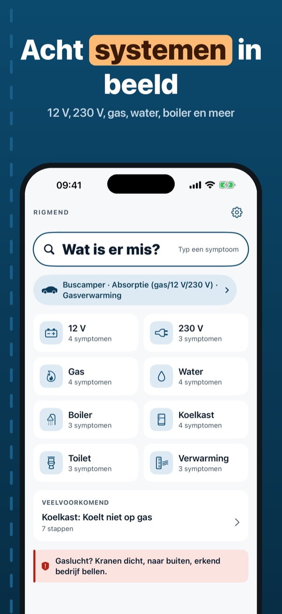
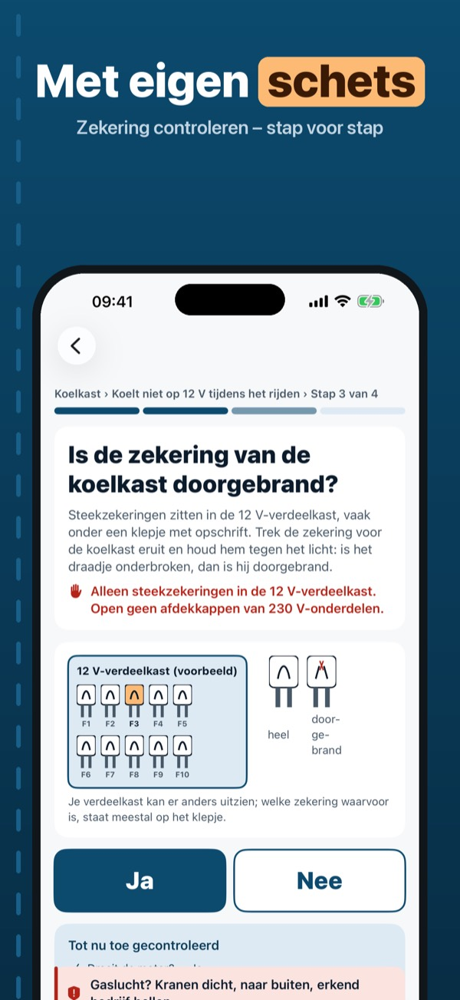
Rigmend helpt bij storingen aan camper, buscamper en caravan. Je kiest het systeem en de klacht, beantwoordt korte ja/nee-vragen en komt stap voor stap bij de oorzaak – ook zonder bereik op de camping. Bij gas en 230 V eindigt elke route met een duidelijke verwijzing naar de erkende werkplaats.
10 veelvoorkomende klachten, de checklist winterklaar en alle veiligheidsregels werken zonder aankoop. Rigmend Plus is een eenmalige aankoop: alle klachten in acht systemen, filter voor je bouwtype, checklist seizoensstart, servicenotitie als pdf, notities en geschiedenis. Geen abonnement.
Rigmend helpt bij het zoeken naar de oorzaak en vervangt geen erkende werkplaats. Werk aan gas- en 230V-installaties hoort bij een erkend bedrijf. Geen merkgegevens, alleen algemene bouwtypes.
Terms of Use (EULA): https://www.apple.com/legal/internet-services/itunes/dev/stdeula/
Privacy: https://apps.baytech.nl/rigmend-eu/
Trova la causa, anche offline
Il frigo non raffredda, la pompa tace, il riscaldamento è spento? Scegli il sintomo, rispondi a brevi domande sì/no e trova la causa passo dopo passo.
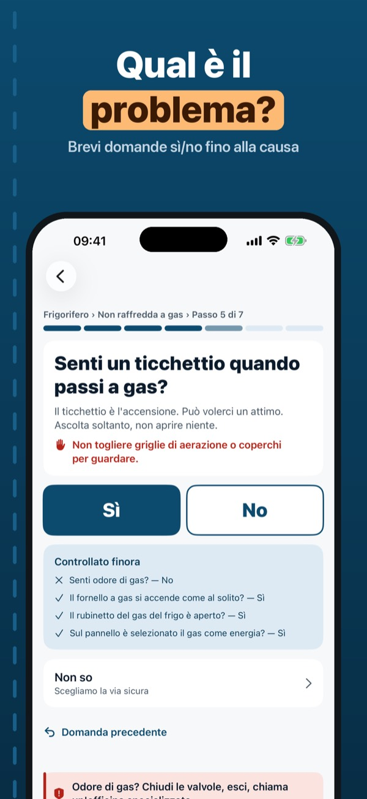
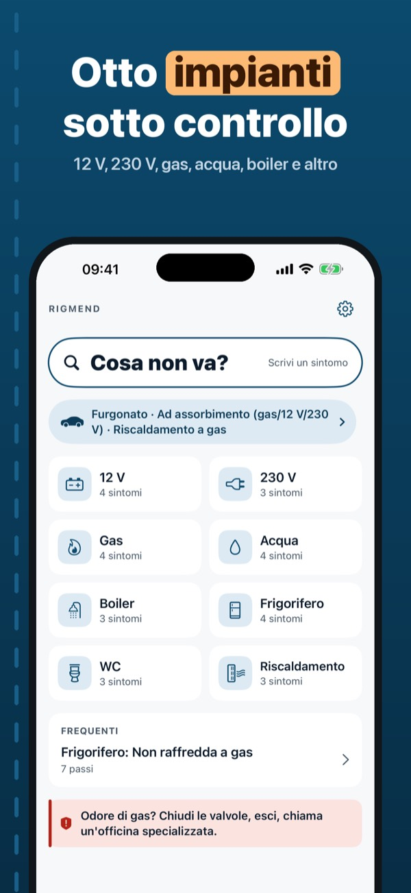
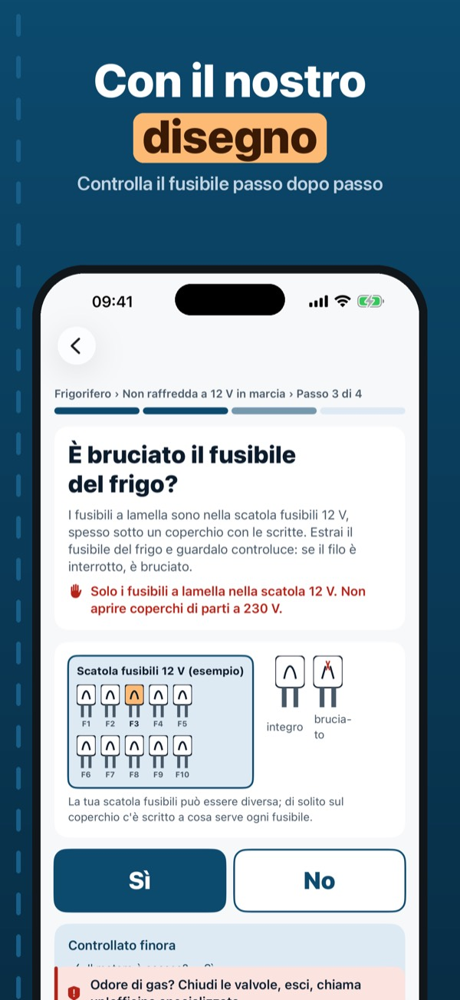
Rigmend aiuta con i guasti di camper, furgonati e roulotte. Scegli l’impianto e il sintomo, rispondi a brevi domande sì/no e arrivi passo dopo passo alla causa – anche senza rete in area di sosta. Per gas e 230 V ogni percorso finisce con un’indicazione chiara: officina specializzata.
10 sintomi frequenti, la checklist invernaggio e tutte le regole di sicurezza funzionano senza acquisto. Rigmend Plus è un acquisto unico: tutti i sintomi in otto impianti, filtro per la tua tipologia, checklist inizio stagione, nota di servizio in PDF, note e cronologia. Nessun abbonamento.
Rigmend aiuta a cercare la causa e non sostituisce un’officina specializzata. Gli interventi su impianti gas e 230 V spettano a un’officina specializzata. Nessun dato di marca, solo tipologie generali.
Terms of Use (EULA): https://www.apple.com/legal/internet-services/itunes/dev/stdeula/
Privacy: https://apps.baytech.nl/rigmend-eu/
Hitta felet, även offline
Kylskåpet kyler inte, vattenpumpen tyst, värmen av? Välj symtom, svara på korta ja/nej-frågor och hitta orsaken steg för steg.
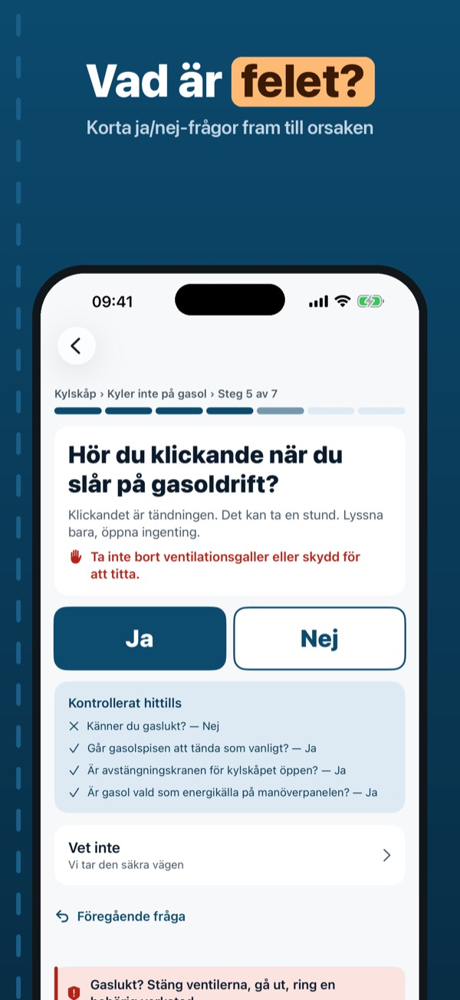
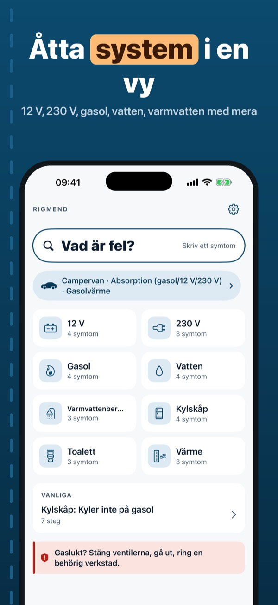
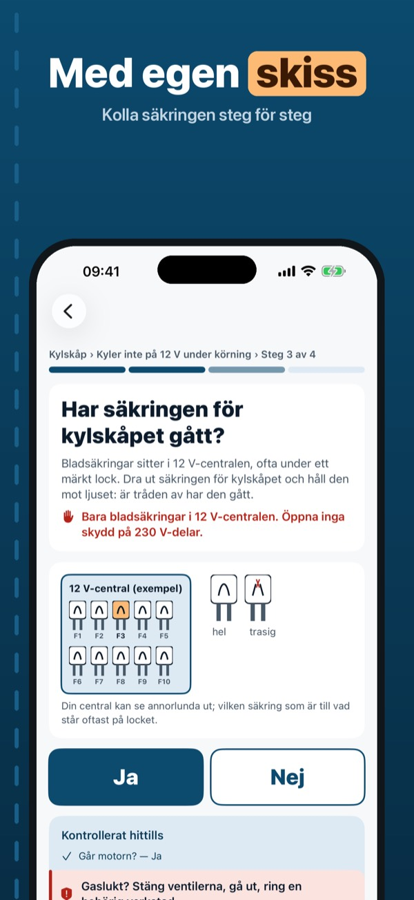
Rigmend hjälper vid fel på husbil, campervan och husvagn. Du väljer system och symtom, svarar på korta ja/nej-frågor och kommer steg för steg fram till orsaken – även utan täckning på ställplatsen. Vid gasol och 230 V slutar varje väg med en tydlig hänvisning till en fackverkstad.
10 vanliga symtom, checklistan för vinterförvaring och alla säkerhetsregler fungerar utan köp. Rigmend Plus är ett engångsköp: alla symtom i åtta system, filter för din fordonstyp, checklista för säsongsstart, serviceanteckning som PDF, anteckningar och historik. Ingen prenumeration.
Rigmend hjälper dig att hitta orsaken och ersätter inte en verkstad. Arbete på gasol- och 230 V-installationer ska göras av en fackverkstad. Inga märkesuppgifter, bara allmänna typer.
Terms of Use (EULA): https://www.apple.com/legal/internet-services/itunes/dev/stdeula/
Privacy: https://apps.baytech.nl/rigmend-eu/
Trouver la cause, hors ligne
Le frigo ne refroidit plus, la pompe se tait, le chauffage est coupé ? Choisissez le symptôme, répondez par oui ou non et trouvez la cause pas à pas.
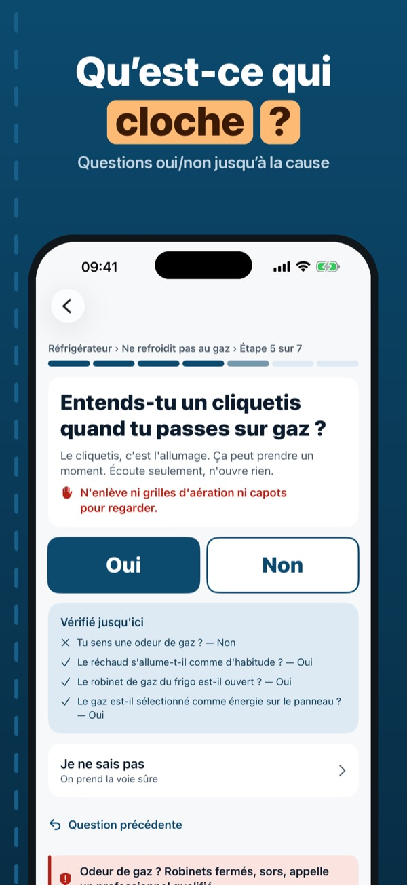
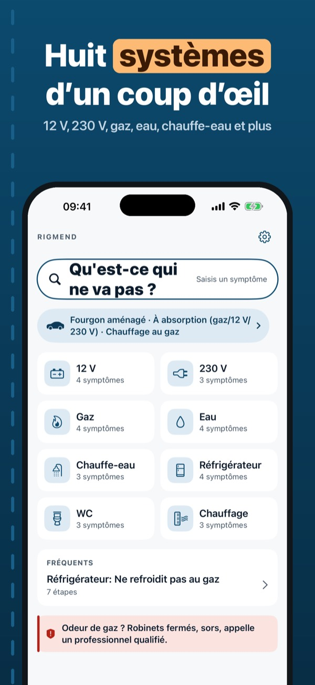
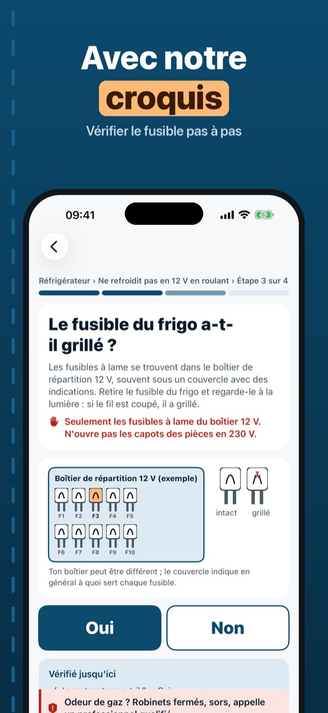
Rigmend aide en cas de panne sur camping-car, fourgon aménagé et caravane. Vous choisissez le système et le symptôme, répondez à de courtes questions oui/non et arrivez pas à pas à la cause – même sans réseau sur l’aire. Pour le gaz et le 230 V, chaque parcours se termine par un renvoi clair vers un professionnel.
10 symptômes fréquents, la liste d’hivernage et toutes les règles de sécurité fonctionnent sans achat. Rigmend Plus est un achat unique : tous les symptômes dans huit systèmes, filtre selon votre type de véhicule, liste de début de saison, note d’entretien en PDF, notes et historique. Sans abonnement.
Rigmend aide à chercher la cause et ne remplace pas un atelier. Les interventions sur le gaz et le 230 V relèvent d’un professionnel. Aucune donnée de marque, uniquement des types généraux.
Terms of Use (EULA): https://www.apple.com/legal/internet-services/itunes/dev/stdeula/
Privacy: https://apps.baytech.nl/rigmend-eu/